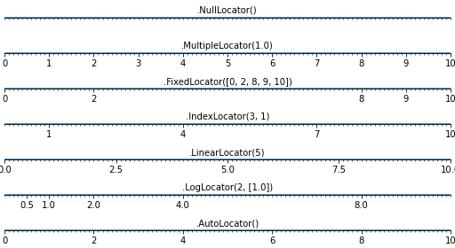

Note
Go to the end to download the full example code
Locators for tick on axis¶
An example demoing different locators to position ticks on axis for matplotlib.
import numpy as np
import matplotlib.pyplot as plt
def tickline():
plt.xlim(0, 10), plt.ylim(-1, 1), plt.yticks([])
ax = plt.gca()
ax.spines["right"].set_color("none")
ax.spines["left"].set_color("none")
ax.spines["top"].set_color("none")
ax.xaxis.set_ticks_position("bottom")
ax.spines["bottom"].set_position(("data", 0))
ax.yaxis.set_ticks_position("none")
ax.xaxis.set_minor_locator(plt.MultipleLocator(0.1))
ax.plot(np.arange(11), np.zeros(11))
return ax
locators = [
"plt.NullLocator()",
"plt.MultipleLocator(1.0)",
"plt.FixedLocator([0, 2, 8, 9, 10])",
"plt.IndexLocator(3, 1)",
"plt.LinearLocator(5)",
"plt.LogLocator(2, [1.0])",
"plt.AutoLocator()",
]
n_locators = len(locators)
size = 512, 40 * n_locators
dpi = 72.0
figsize = size[0] / float(dpi), size[1] / float(dpi)
fig = plt.figure(figsize=figsize, dpi=dpi)
fig.patch.set_alpha(0)
for i, locator in enumerate(locators):
plt.subplot(n_locators, 1, i + 1)
ax = tickline()
ax.xaxis.set_major_locator(eval(locator))
plt.text(5, 0.3, locator[3:], ha="center")
plt.subplots_adjust(bottom=0.01, top=0.99, left=0.01, right=0.99)
plt.show()
Total running time of the script: (0 minutes 0.767 seconds)